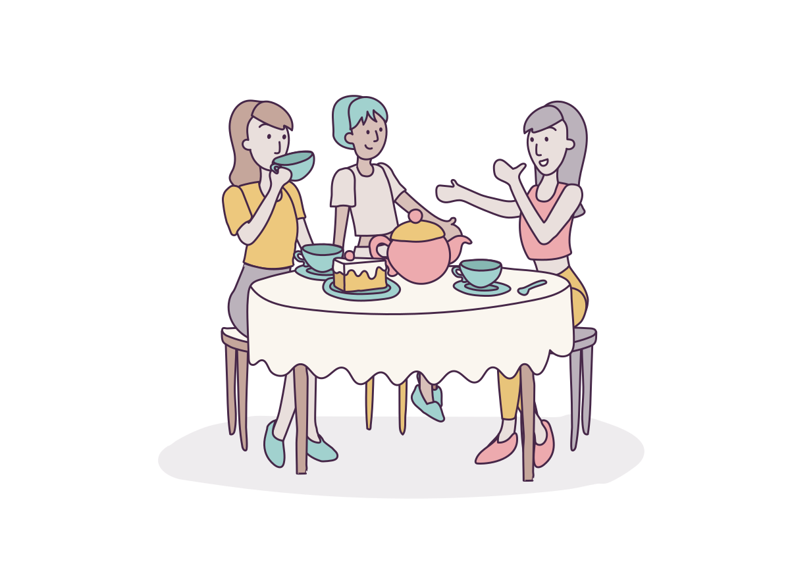

01 / 08

Editorial draft · category under review
Coffee together
- Current category
- Meals & Drinks
- Suggested duration
- Not specified
Make time for a drink and a catch-up with people you know.
Practical tips
- Choose a place where everyone can sit together.
- Agree a time that works for the group.
Source & artwork provenance
- Stable ID
coffee-together- Activity sources
- S0618, S0945, S0716
- Title evidence
- S0618, S0945
- Copy status
- Editorial draft: description and tips are newly written from the documented activity, for review before publishing.
- Duration evidence
- No approved duration established; null retained.
- Category evidence
- Editorial assignment using labels present in source materials; categories combine source catalogue and wellness labels and need a single approved taxonomy.
- Illustration source
- S0716
source-materials/main-archive/RES - Resbite/RES005 - Product/Visual/Resbites Illustrations/SVGs/Artboard 9.svg - Original SVG SHA-256
5548e27619db0e6572d9f8b6423b018849d75c835c2c568abd59c6a6e9f6f14c- Export
- Rendered complete original SVG to 1200px-wide transparent PNG; no artwork additions or edits.
mobile/assets/activities/coffee-together.png - Current PNG SHA-256
a7e20e2d713cd7d08e0d0cb3c71e4b1d7d6af3ca996edb142211884ed92326e2